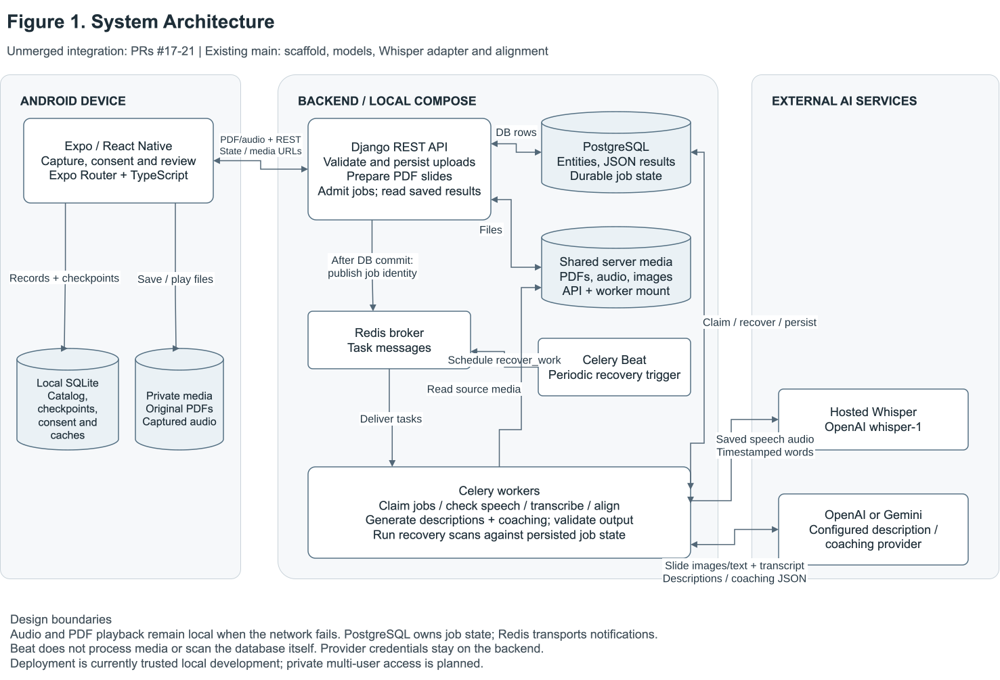
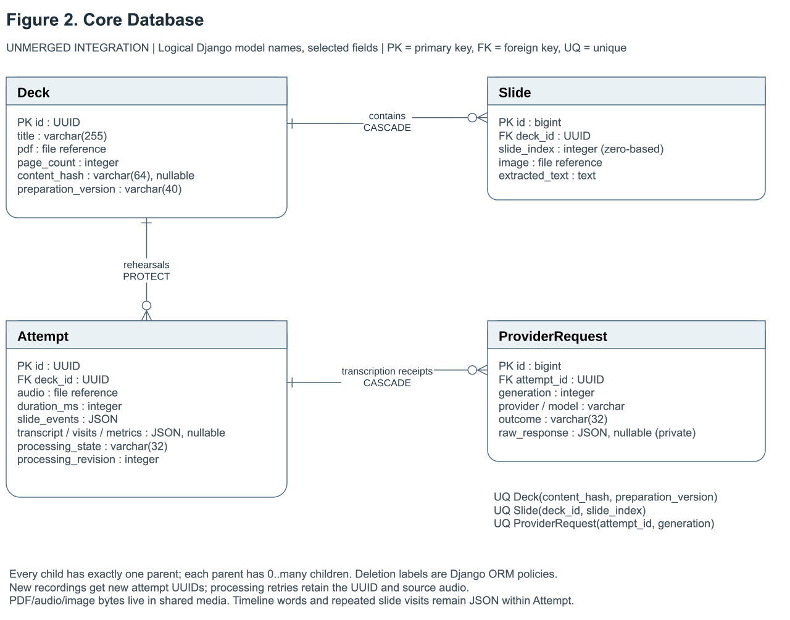
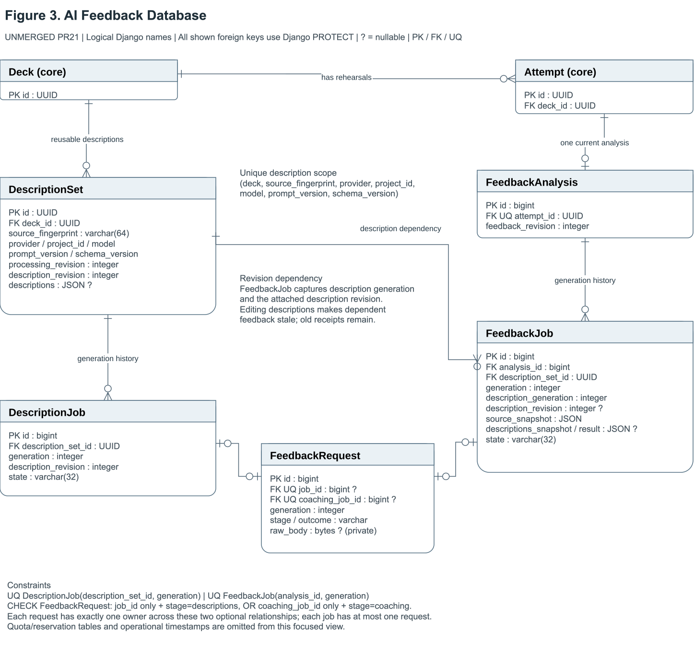
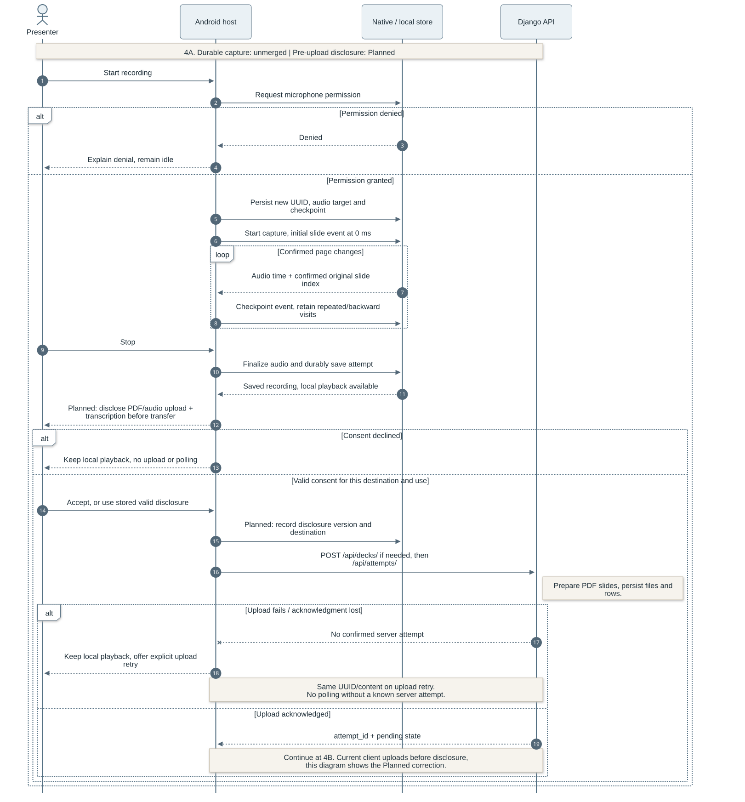
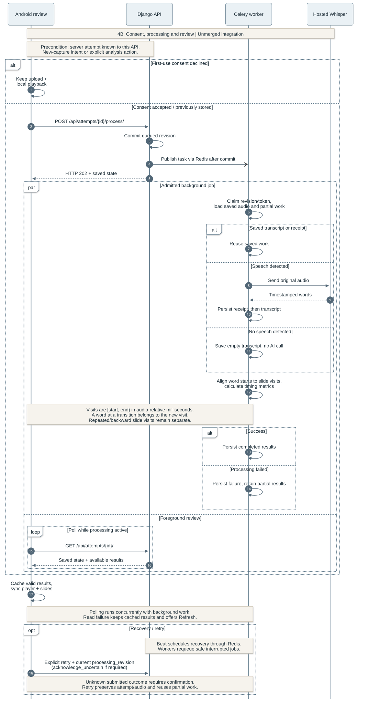
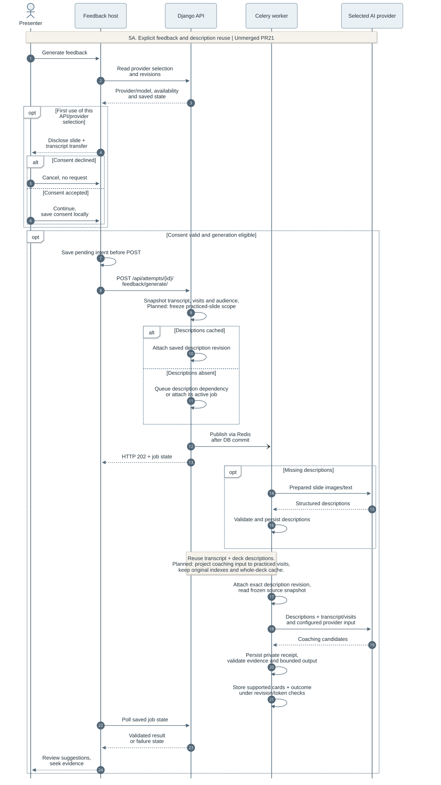
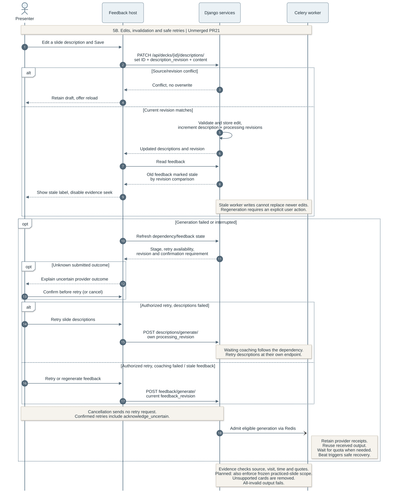
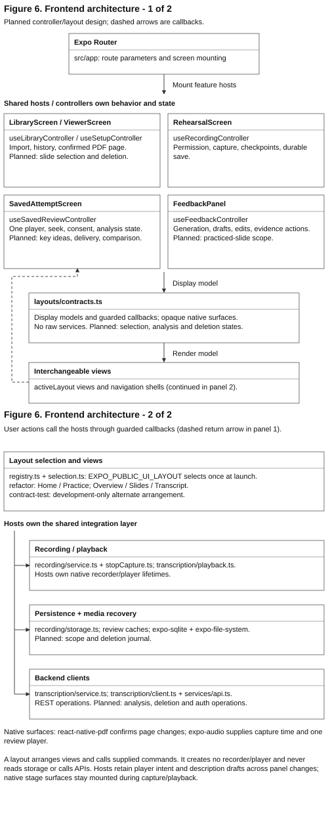

OutLoud Design Documentation
Team 07 | Rev.3.0 review draft | 9 October 2026
OutLoud is an Android presentation-rehearsal app. Presenters import PDF slides, record a rehearsal and review their speech against the slides they visited. The design keeps recording and playback on the phone while the backend produces timestamped transcripts and evidence-linked coaching.
1. Document Revision History
| Version | Date | Description |
|---|
| Rev.1.0 | 2026-09-28 | Initial architecture, data model and processing design. |
| Rev.2.0 (draft) | 2026-10-09 | Reconciled the design with recording, persistence, transcription, review and feedback implementation. |
| Rev.3.0 (review draft) | 2026-10-09 | Integrated the Phase 1 diagrams; rewrote component responsibilities, workflows and design rationale; shortened API detail. |
Implementation scope, checked 9 October 2026. Merged main contains the scaffold, initial models, hosted Whisper adapter and alignment logic. Unmerged PRs #17-21 contain the integrated design in Figures 1-5; #17 incorporates #13's recording contribution. Local-only denotes the controller/layout refactor on codex/refactor-design in Figure 6. Planned features appear in section 8. Exact revisions belong to the supporting source snapshot. These labels describe code availability, not deployment or test completion.
Contents
2. System Architecture

Figure 1. System Architecture (Unmerged integration). Device, backend and provider boundaries separate interactive capture from asynchronous analysis. PostgreSQL stores durable job state; Redis transports job identities. API and worker processes share media storage. Open full-size SVG.
The Android client owns PDF navigation, microphone capture, consent and playback. It writes each rehearsal to private device storage before starting an upload. Django validates and persists the upload, prepares PDF pages during the deck request, and admits analysis jobs. Celery workers read saved media, call AI providers and store derived results. Beat schedules recovery tasks through Redis; workers perform the database scans and recovery.
The client sends PDF/audio files and slide-event metadata through REST, then reads saved progress and results. Hosted OpenAI whisper-1 receives original audio for transcription. A separate backend-configured OpenAI or Gemini adapter receives slide images/text and rehearsal context for descriptions and coaching. Provider credentials remain on the server. Current deployment uses local Compose services; private multi-user deployment remains planned.
Dependencies and responsibilities
| Layer | Frameworks and libraries | Role |
|---|
| Android UI | Expo, React Native, TypeScript, Expo Router | Routes, feature hosts and views. |
| Device integrations | react-native-pdf, expo-audio, expo-sqlite, expo-file-system, expo-document-picker | Native PDF/audio, metadata persistence and private media import/storage. |
| API and workers | Django REST Framework, Celery, Redis | Request validation, service orchestration and background task delivery. |
| Media and AI | pypdfium2, pypdf, Pillow; PyAV, Silero ONNX; OpenAI/Gemini adapters | PDF preparation, speech-presence detection and external inference. |
| Server storage | PostgreSQL and a shared media volume | Relational identities, JSON results, durable jobs and media files. |
Architectural decisions
Local capture keeps recording responsive during network or provider failure. Backend inference centralizes credentials and avoids packaging a transcription model on Android, at the cost of connectivity, service charges and disclosure requirements. The phone can replay saved audio before any analysis finishes.
REST polling suits analysis that may outlast a request or continue after the app closes. Reopening review reads persisted state without rebuilding a streaming session. Polling adds requests and some update delay compared with WebSockets, but avoids maintaining a persistent connection for this workflow.
The API commits job state before publishing to Redis. A missed notification can therefore be recovered from PostgreSQL. Revision and claim checks prevent duplicate deliveries or expired workers from publishing conflicting results. This requires more coordination than a queue-only design, but preserves recoverability across process restarts. Original media and completed intermediate results remain independent of later-stage success.
Source entry points: deployment, storage service, task entry points.
3. Database Design
Core rehearsal data

Figure 2. Core Database ER Diagram (Unmerged integration). Decks own ordered slides and support multiple attempts. Each attempt retains its audio timeline and processing receipts. PK, FK and UQ mark keys and uniqueness; ? marks nullable fields. Deletion labels describe Django ORM policies. Open full-size SVG.
A Deck represents a prepared PDF. The content hash and preparation version identify reusable preparation output, while (deck_id, slide_index) uniquely identifies each Slide. A new recording creates a new Attempt UUID. Upload and processing retries retain that UUID and source audio, so retrying cannot create a second rehearsal in history.
Slide events, transcript words, chronological visits and metrics are JSON on Attempt. Review normally reads this timeline together; separate word/visit tables would introduce joins without serving a current independent editing workflow. The tradeoff is that services must validate JSON structure and timing. File fields reference PDFs, audio and slide images in shared media storage. ProviderRequest holds one private transcription receipt per attempt generation, allowing normalization or alignment to recover without repeating completed provider work.
Slides cascade with a deleted deck, while attempts protect a referenced deck. These ORM constraints preserve relationships; a user-facing deletion operation still needs coordinated file and job cleanup.
Reusable descriptions and coaching history

Figure 3. AI Feedback Database ER Diagram (Unmerged PR #21). Deck descriptions can serve multiple attempts. Versioned jobs capture the description content used for coaching; each provider receipt has exactly one job owner. Core Deck and Attempt entities provide the connection to Figure 2. Open full-size SVG.
DescriptionSet caches slide descriptions within a scope defined by the deck, slide-source fingerprint, provider, project, model, prompt and schema versions. DescriptionJob records each generation. This scope prevents incompatible inputs or provider configurations from sharing a cache entry.
An attempt has at most one FeedbackAnalysis, which owns successive FeedbackJobs. Each job captures the rehearsal source and the exact description revision it used. Processing revisions identify authorized work; description revisions identify editable content. An edit advances both description content and processing revisions, invalidating old worker writes and making dependent coaching stale. FeedbackRequest has an exclusive description-job or coaching-job owner, enforced by nullable one-to-one relationships and a check constraint. Receipts remain private. Operational quota/reservation models share limits across both stages and are omitted from this focused ERD.
These relationships favor reproducible results and selective recovery over a single mutable feedback field. Full constraints and persistence behavior are defined in the models.
Device-side persistence
SQLite stores JSON domain records in a key/value table: the local catalog, capture checkpoints, consent and cached review state. App-private files hold PDFs and audio. Checkpoints make interrupted capture discoverable, but recovery still depends on a playable native file. API-address-scoped mappings and caches separate server histories; downloaded review copies remain distinct from original captures. This supports offline playback without treating the local cache as the server's job authority. See recording storage.
4. Backend and API Design
HTTP views validate inputs and serialize public state. Storage, processing, description and coaching services own domain rules; Celery tasks delegate to them for generation and recovery. Inference runs outside HTTP requests and database transactions. PDF preparation currently runs during deck upload.
All routes use /api/ and trailing slashes. The table shows paths relative to that prefix. The API contract remains the detailed reference for payloads, revisions and error cases.
| Endpoint group | Main routes | Responsibility |
|---|
| Decks | POST decks/; GET decks/{id}/ | Prepare/store PDFs; retrieve slide metadata. |
| Attempts | POST attempts/; GET attempts/{id}/; GET decks/{id}/attempts/ | Persist recordings; read results and history. |
| Transcription | POST attempts/{id}/process/ | Admit initial processing or an explicit retry. |
| Descriptions | GET/PATCH decks/{id}/descriptions/; POST decks/{id}/descriptions/generate/ | Read, edit or generate reusable descriptions. |
| Coaching | GET attempts/{id}/feedback/; POST attempts/{id}/feedback/generate/ | Read or explicitly generate rehearsal coaching. |
| Operations | GET health/; GET ready/ | API liveness and database/broker reachability. |
Request and result conventions
Upload and analysis are separate operations. POST /api/attempts/ accepts multipart audio and a JSON-string metadata field. This illustrative metadata records a return to the first slide:
{
"id": "33333333-3333-4333-8333-333333333333",
"deck_id": "11111111-1111-4111-8111-111111111111",
"duration_ms": 12000,
"audience": "Students new to the topic",
"slide_events": [
{"slide_index": 0, "at_ms": 0},
{"slide_index": 1, "at_ms": 4000},
{"slide_index": 0, "at_ms": 9000}
]
}
A newly stored attempt returns HTTP 201:
{"attempt_id": "33333333-3333-4333-8333-333333333333", "status": "pending"}
Initial processing accepts {}; an active request returns HTTP 202 with saved state. GET returns available results without generating new work. Wire fields use snake_case, zero-based slide indexes and integer milliseconds. Public state separates progress, usable partial results and retry eligibility. The TypeScript contracts and client parsers define the frontend boundary.
Validation rejects invalid inputs; conflicting content, stale revisions and missing retry confirmation produce conflicts. Provider failures retain stage-specific errors and usable data. After a client timeout, refresh saved state before retrying: the server may have continued processing. See routes and views.
5. Recording, Transcription, and Slide Alignment

Figure 4A. Recording and Durable Upload (Unmerged integration). Permission precedes capture; finalized local storage precedes upload. Failed upload leaves playback available and retains the recording identity for retry. Figure 4B continues once the client knows a server attempt. Open full-size SVG.
The recording host requests microphone permission, then saves the new attempt identity, audio target and initial slide checkpoint. During capture it records confirmed PDF page changes against native audio time. Stop finalizes the file and saves the attempt before the saved-review screen begins network work. This ordering protects the rehearsal from upload failure. An interrupted native recording can be recovered only if its file is playable. Current upload limits are 1-10 slides, a 20 MiB PDF, ten minutes of audio and 25,000,000 audio bytes. The lifecycle is implemented in RehearsalScreen and stopCapture.

Figure 4B. Transcription, Alignment and Review (Unmerged integration). Consent-controlled admission starts background work while foreground review polls persisted state. Recovery reuses durable results and requires confirmation for uncertain submitted requests. Lifelines combine each participant's internal service/database operations; Figure 1 shows physical boundaries. Open full-size SVG.
A durable new-capture intent coordinates upload, then requests initial transcription after the first-use OpenAI disclosure. Cancelling leaves the upload saved; older recordings use an explicit Analyze action. Polling requires a server attempt known to the current API address and stops when review leaves the foreground. Opening history or replaying audio does not authorize new analysis.
The worker claims a processing revision, reuses saved transcript/receipt data when available, or runs a speech-presence check before Whisper. The gate uses a temporary decoded waveform; transcription receives unchanged original audio. No-speech recordings retain visits and timing with an empty transcript. The worker saves the transcript before alignment, so an alignment failure does not erase recognized speech.
Word-start alignment and synchronized review
Slide events define chronological half-open intervals [start_ms, end_ms); the final visit ends at the recording duration. Each word belongs to the visit containing its start time, found with bisect_right. In the example from section 4, slide 0 occupies [0, 4000) and [9000, 12000), while slide 1 occupies [4000, 9000). A word starting at 4000 belongs to slide 1. Repeated/backward visits stay separate, and the last event wins when transitions share a timestamp.
This rule preserves the recorded navigation and gives exact-boundary words a deterministic owner. A word may finish after a slide transition without being split. Invalid timing fails alignment while retaining the transcript. One native player then drives the PDF page, transcript highlighting and evidence seeks from its audio position; missing alignment falls back to recorded navigation. Leaving review or backgrounding pauses playback.
Recovery scans requeue safe interrupted work. Revision and claim-token checks fence stale workers; saved provider output permits downstream recovery without another call. An unknown outcome after provider submission requires explicit acknowledgement before a retry because the service may already have processed it. This reduces repeat work without promising exactly-once execution. Source: alignment, processing, analysis controller.
6. AI Feedback Design

Figure 5A. Feedback Generation and Description Reuse (Unmerged PR #21). Explicit generation binds a rehearsal snapshot to compatible slide descriptions. Missing descriptions become a job dependency; coaching reuses the existing transcript. Polling reads saved state while workers process it. Open full-size SVG.
The user requests coaching from saved review. The client reads the backend's provider selection and obtains applicable disclosure consent before sending a generation request. Provider selection is server configuration, and feedback is disabled by default. The API freezes the transcript, visits and audience context, then attaches cached descriptions or waits for their generation. Descriptions interpret slide images/text; their key ideas are distinct from the planned summaries of spoken content.
Separating descriptions from coaching avoids describing unchanged slides for every rehearsal. Capturing their revision also makes the advice traceable after later edits. OpenAI/Gemini adapters supply bounded structured output behind the same service boundary; retry uses the job's saved provider configuration. See description orchestration and coaching orchestration.
Evidence and result validity
Coaching produces up to three suggestions for consistency, clarity or audience fit. Each suggestion references a slide source and a contiguous run of transcript words within one visit. The backend checks source identity, word indexes, exact quotations and description evidence, then derives the seek interval from saved word timing. This prevents invented citations or ambiguous repeated phrases from becoming playback links.
Unsupported cards are discarded. A result can be partial or validly empty; an all-invalid response is a failed generation. Structural validation establishes traceability, not the semantic correctness or usefulness of advice. The client validates evidence against the loaded rehearsal before enabling seeks through the shared player. Raw provider receipts stay private.

Figure 5B. Description Edits, Invalidation and Retry (Unmerged PR #21). Revision-checked edits protect concurrent changes. Older coaching remains identifiable as stale; explicit regeneration and stage-specific retries reuse saved work. Open full-size SVG.
PATCH includes the description set and content revision. A conflict preserves the user's local draft for reconciliation. A successful edit advances description and processing revisions, prevents older workers from overwriting it, and marks dependent feedback stale. The UI disables stale evidence actions until regeneration. Keeping old receipts and results supports explanation and recovery without presenting them as current advice.
Description failures retry through the description endpoint; coaching failures use the feedback endpoint. Both require current revisions, with additional confirmation for uncertain provider outcomes. Saved receipts can be normalized again without a new call. Quota handling is provider-specific: eligible OpenAI local waits resume, while Gemini local exhaustion stops with an explicit retry after cooldown. Provider errors do not trigger automatic paid repair calls. The feedback design and feedback controller retain the detailed state rules.
7. Frontend Architecture

Figure 6. Frontend Architecture (Local-only layout refactor). Expo Router mounts feature hosts. Controllers own state and integrations; type-only layout contracts expose display models, capabilities, guarded callbacks and native surfaces to replaceable views. Shared services depend on the unmerged integration. Open full-size SVG.
Route files adapt navigation parameters to feature hosts. Controllers keep recording, playback, consent, request state and editor drafts above the layout boundary. Layouts arrange views and invoke the supplied commands. They receive no raw recorder/player or storage/API client, so a visual redesign can preserve behavior without creating another implementation of capture or review.
State ownership
| Host / controller | Owned responsibility |
|---|
LibraryScreen / useLibraryController | PDF import, known presentations, focused refresh and local/server history. |
ViewerScreen / useSetupController | Confirmed native page, deck identity, audience and start eligibility. |
RehearsalScreen / useRecordingController | Recorder lifetime, permissions, interruptions, slide checkpoints and durable save. |
SavedAttemptScreen / useSavedReviewController | One player, media recovery, seek intent and analysis consent/retries. |
FeedbackPanel / useFeedbackController | Feedback generation, description drafts, conflicts and validated evidence actions; wraps useFeedbackReview. |
Home emphasizes import and recent presentations; Practice groups saved attempts by deck. Saved review presents Overview, Slides and Transcript panels around one player. The review host keeps the feedback controller and media lifecycle outside these panels, so changing views preserves playback position and editor drafts. Evidence actions reveal the relevant slide and use the shared validated seek path.
mobile/src/layouts/contracts.ts defines the type-only boundary; registry.ts and selection.ts choose a layout at startup through EXPO_PUBLIC_UI_LAYOUT. The local Refactor Design and development-only contract layout use the same hosts. A layout must mount each native stage once and keep it mounted during active capture/playback. An import-boundary check enforces the separation from integration code. This adds a contract-maintenance cost, but confines visual changes to views while controllers continue to own lifecycle rules.
Local entry points are docs/ui-layouts.md and the layout modules above on codex/refactor-design; they have no published source link yet. Shared backend calls, including feedback, use transcription/service.ts, transcription/client.ts and services/api.ts.
8. Planned Extensions
| Planned feature | Main architectural work |
|---|
| Speech summaries | Version a spoken-content summary against the attempt/transcript, separately from slide descriptions and coaching. |
| Selected-slide retries | Represent an ordered selection separately from observed visits; update capture/upload/analysis contracts and create a new attempt. |
| Same-slide comparison | Match deck/slide identities across attempts while retaining separate audio timelines and result revisions. |
| Deletion | Coordinate related rows, originals, derivatives, local caches and active jobs, including incomplete cleanup. |
| Private access before deployment | Add ownership, authentication, authorized media access, secure transport and retention rules. |
| Additional delivery measures | Define pause/filler/repetition detection and its evidence requirements; the current speech-presence gate does not provide these measures. |
Two requirements decisions remain open. NFR-05 asks for external-processing disclosure before upload; the current client uploads to the backend before its transcription disclosure. The proposed resolution is to add disclosure before the first backend transfer while retaining provider-specific consent. The requirements also describe automatic post-rehearsal processing, whereas coaching requires a separate request. The team should confirm automatic transcription plus optional explicit coaching, or authorize a changed orchestration flow. This draft neither changes those requirements nor claims agreement.
9. References
The Requirements & Specifications defines product scope. The supplied 3 - Design Documentation Guidelines.pdf governs this page. Source modules are linked beside their design explanations; the API contract and AI feedback design contain implementation-level detail.
The course examples informed organization, diagram placement and technical depth: Team 07, Team 16 - FitQuest, Team 09 - StoryBridge and Team 04 - LingoFit. The companion comparison and source snapshot preserve benchmarking and revision details. docs/ai-use.md records task-level AI assistance.
Maintain this document when component boundaries, persistence or contracts change. For Iteration 5, document at least two implemented design patterns with module locations, motivating problems, alternatives, benefits, core code snippets and component roles. That later analysis is not claimed complete here. Keep application testing plans and results in separate Testing Documentation; existing verification references are collected in the review guide.